Egypt is annually visited by millions of travellers from all over the world. Mysterious sphinxes, majestic pyramids, stunning artefacts of bygone eras – a trip there will give you the opportunity to touch the ancient history and see the places and objects, which many people had seen only in the numerous pictures on the Internet, with your own eyes.
Moreover, Egypt is a country for memorable beach holidays, snorkelling or diving to explore the beautiful coral reefs of the Red Sea, Nile river cruises, adventures in the Sahara desert and whatnot. Everyone will find something to get busy with.

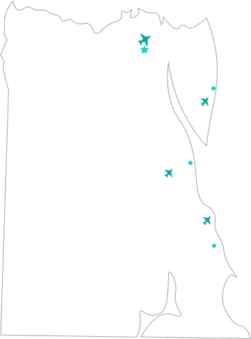
If you need some sun, Egypt will be your perfect choice to spend a holiday. Red Sea resorts welcome tourists almost all year round, though October, November, April, and May, as well as the festive season are still the most popular time with travellers.
However, when planning your holiday, take into account that every Egyptian resort has some peculiarities. Golden sand beaches of Hurghada, underwater coral reef cities of Sharm El Sheikh, exciting and interesting Cairo – in order to make a right choice, pay special attention to all characteristics of each destination.
A major resort of the Egyptian Mediterranean with an international airport. The second largest city in the country, founded by Alexander the Great, which was also the capital of Ptolemaic Egypt.
Near the new Library of Alexandria, you can see the most famous Egyptian monument to Alexander the Great. By the way, the library itself is also very interesting, but no longer a historical, but an architectural landmark, since it was built only a couple of decades ago.
Ships from all over the Mediterranean came to ancient Alexandria, a lighthouse was built there, recognized as one of the Seven Wonders of the Ancient World. Unfortunately, the famous Pharos of Alexandria was severely damaged by three earthquakes, but more than thirty fragments of its granite blocks and other artifacts can now be viewed in detail in the museums of Alexandria.
It’s a relatively young city that was built in the middle of the nineteenth century. Egypt exports cotton and rice through the sea gate of Port Said, and there’s also an airport, which is an important stronghold of the regional transport infrastructure.
There are many interesting sights in Port Said but the main one is the Suez Canal, on which dozens of ships sail every day. There’s a suspension bridge at a height of seventy meters over the canal, which is a very picturesque sight.
By the way, it was Port Said where the Statue of Liberty was initially planned to be installed, the one that can be admired today in the bay of New York. The Light of Asia – it was the original name of today's American symbol.
The capital of Egypt is a bright city, which is located on two banks of the Nile. In the southwest, Cairo is adjoined by famous Giza, which is famous all over the world for its majestic pyramids and the Great Sphinx, a monumental sculpture that has come down to us from ancient times and represents a giant lion carved from a limestone rock.
Old Cairo with its picturesque narrow streets and mosques is located on the East Bank of the Nile. On the West Bank there are mainly modern buildings, including government ones, so it really feels like a metropolis there.
There’s much traffic on the roads of the city: there’s a huge number of buses and taxis, trams and metro. Cairo has an international airport, which annually has tens of thousands of flights from different countries, it’s the second busiest airport in Africa after Johannesburg Airport in South Africa.
It’s a small town situated on the site of a former Bedouin village. This place is the most suitable for those who like quiet and relaxing holidays.
There are no crowds of people there: hotels in Nuweiba are separated from each other, and every hotel has its own stretch of shore several hundred meters long. There is enough space for everyone on the beaches of Nuweiba, so vacationers can enjoy the sun and the sea comfortably. The sea is clean, the beaches are sandy but tourists should still wear special shoes not to hurt their feet on the corals found there.
The main sites of Nuweiba include Nuweiba castle, built on top of the remains of a still older castle in 1893, and the Coloured Canyon which is the main tourist attraction. It got its name because of multicolored sandstone rocks with granite, cobalt, copper and ancient corals.
It’s a resort where strong winds blow almost all year round but still many tourists from all over the world come there. The reason is that the waves and wind in Dahab are perfect for yachting, windsurfing and kiteboarding. Water sports are one of the main specialties of the resort.
Dahab is also considered to be one of the best places for diving in Egypt. There are several well–known dive sites there, and the most popular of them is, certainly, the Blue Hole, a mysterious and dangerous vertical underwater cave, more than a hundred meters deep.
Divers in Dahab like diving from coral reefs that are located close to the shore; by the way, it allows them not to rent a special boat and helps to save money on the trip. There are dozens of diving schools there, where they will be happy to help you develop all the necessary skills to make safe dives.
It’s one of the most popular resorts in Egypt, the second largest after Hurghada. Residents of concrete jungles will definitely enjoy lying on the resort’s sunny beaches, but it should be taken into account that beaches of Sharm El Sheikh vary a lot. Gently sloping sandy beaches which are perfect for family holidays with children, are located mainly in the areas of Naama Bay and Sharm El Maya.
Typical leisure activities on the beaches of Sharm El Sheikh include windsurfing, water skiing, bananas, aquabikes, parasailing, and various boat trips. Of course, don’t forget about diving – it's just amazing there. After experiencing a romantic day or night dives and seeing the local marine fauna, every tourist can feel like a real explorer of mysterious underwater worlds.
Another advantage of Sharm El Sheikh is an international airport. It takes not more than half an hour to get to any hotel from there. And the variety of hotels there is huge, for any budget and preferences.
Hurghada region is Egypt's largest resort and a classic Red Sea resort. The busiest area of its capital, the city of Hurghada, is El Mamsha. There are many hotels and equipped beaches there, and along the coast there is a pedestrian street called Village Road, it’s a favorite place for vacationers to go for a walk. There are lots of shops and cafes, restaurants and nightclubs on the Village Road. El Mamsha is the best place in Hurghada for those who like all kinds of leisure activities and entertainment.
Beaches there can be rocky or golden sandy. There are corals on the bottom, so it's better to swim in special shoes in some areas.
Travelers in Hurghada should admire the magnificent coral reefs, or take a tour to local oceanariums and the Hurghada Antiquities Museum which are also popular with tourists. And, of course, one of the main advantages of Hurghada is an international airport, from which it is easy to get to any of the local hotels.
One of the country's international airports is located there, so those who arrive in Luxor immediately plunge into the atmosphere of bygone eras, for which Egypt is so famous. The Karnak Temple, one of the largest temple complexes in the world, is located there. And in the city center, tourists can visit another stunning temple, the Luxor one: today it is a museum that houses amazing artifacts.
The Valley of the Kings, the grandiose necropolis of Ancient Egypt, is also truly fascinating. Pharaohs have been buried there for centuries: in the Valley of the Kings there are tombs of pharaohs, whose names are still familiar not only to history lovers.
In Luxor you can walk the Avenue of the Sphinxes and if you want to rest your tired legs, go on the Nile River boat trip, the river itself is one of the world–famous attractions.
Not so long ago, Marsa Alam was a small fishing village, now it is a large tourist center with a well–developed infrastructure and an international airport.
One of the major attractions of the resort is the Samadai Reef, near which a large population of wild dolphins lives, and they are happy to interact with tourists. Another site which is definitely worth visiting is Wadi El Gemal National Park. Tere you can admire wild gazelles and ride camels, and it is very convenient to get to the park as it is located only half an hour away from the city.
Marsa Alam is famous for sea turtles, which often crawl ashore. Great opportunities for diving is another advantage of the resort. However, even those who do not like sea diving can still see the beauty of the underwater world in detail, if they take a trip on the glass bottom boat, this kind of activity will appeal to both adults and children.
In this city there are quarries, which were famous in Ancient Egypt for their special granite rock, from which colossal statues and monolithic structures were created. The traces left by the tools of ancient stonemasons always arouse the interest of tourists coming there.
There are many historical attractions in Aswan, and there is also a famous High Dam, the construction of which took more than ten years.
It’s one of the hottest cities in the world, and yet travelers do not bypass it. Agatha Christie, beloved by millions of readers of detectives, and the British statesman and politician Winston Churchill stayed there. The hotel, which hosted famous guests, is now completely renovated. Currently, Aswan has a modern international airport.
It’s one of the international airports of Egypt, located three kilometers away from the village of the same name. There are not many attractions there and yet this place attracts thousands of tourists from all over the world every year. The reason is that it’s a historic site comprising two massive rock-cut temples, which is part of the UNESCO World Heritage Site, and history lovers come to see that masterpiece of antiquity with their own eyes.
The Aswan Dam, one of the most significant modern technical structures in the country, is located near the airport. Because of the construction of the Dam, the complex was relocated in its entirety 65 meters higher and 200 meters back from the river Nile to protect the unique structure from flooding.

 Набель
Набель
Набель
Набель
Набель
Набель
Набель
Набель
There’s no doubt that the most popular tourist attractions in Egypt are pyramids, which are the tombs of the pharaohs of the Old and Middle Kingdoms. One of the three Great Giza pyramids is the only one of the Seven Wonders of the Ancient World still in existence. Two massive rock-cut temples in Abu Simbel and the Valley of the Kings, which is the grandiose necropolis of Ancient Egypt located in Luxor, are also fascinating and worth visiting.
We can endlessly enumerate various ancient sites that bear the imprint of many thousands of years of human existence and which are situated in different parts of Egypt. However, if you want to see the greatest collection of artefacts in one place, you should go to the Egyptian Museum located in the centre of Cairo.
The golden funerary mask of Tutankhamun, the Statue of Pharaoh Akhenaten, who was the great "heretic" of Ancient Egypt, mummies and papyri, sarcophagi and statues − the exposition of the Cairo Museum gives an opportunity to literally touch the history, a tour there can easily replace hours of lectures on ancient history.
Moreover, there are modern sights in Egypt. For example, the picturesque suspension bridge over the Suez Canal in Port Said, the city where a famous statue called the Light of Asia widely known now as the Statue of Liberty in New York, was initially planned to be installed. Or the Aswan Dam, one of the most significant modern technical structures in the country, the construction of which took more than ten years.
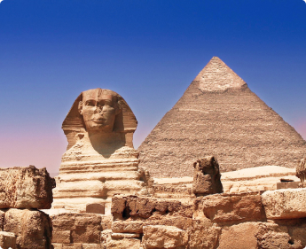
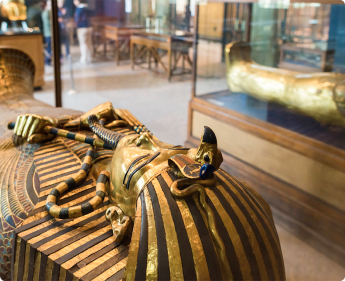
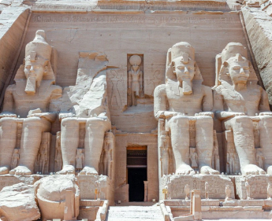
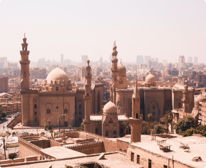
First of all, Egypt is associated with historic sites that create the image of the country and visiting which will really impress you. Moreover, there are many other guided tours in addition to sightseeing.
Nile River cruises are especially popular with tourists as the river is famous all over the world and has a long rich history. Furthermore, guests of Egypt like visiting National Parks that boast exotic flora and fauna. Sea trips, including underwater ones, which are full of romance and beauty, are also worth mentioning.
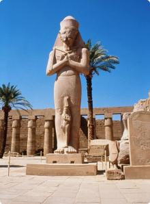
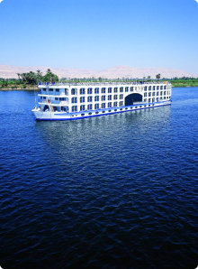
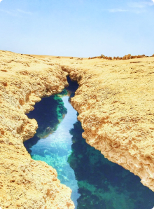
Shopping at Egyptian markets is an exciting activity that will broaden your knowledge of human psychology and provoke a lot of positive emotions in case of making excellent purchases.
Herbs and spices that will make your usual home seasonings seem tasteless, coffee, tea, cosmetics, hand painted hookah pipes – you can find literally anything at Egyptian bazaars.
Speaking about the knowledge of human behaviour and psychology, it’s required to bargain hard and, at the same time, make the seller like you because it’s no secret that in Egypt charming people can get the best items at lower prices.
Buying an authentic artefact is highly unlikely, even if a seller persists that it was that very papyrus which Tutankhamun himself had used to write a few words of wisdom. So, it’s better to look for some more common souvenirs such as masks, statuettes and the main tourist must-have – magnets.
If you still want to purchase something authentic and unique, pay attention to handwoven carpets and pottery with original ornaments.
It’s better to buy goods of this category not in large supermarkets but in small private shops whose owners care about their reputation. The price will be a bit higher but the quality of perfumes and oils will also be a way better than in big stores.
Perfumes are made of natural components, so if you buy really decent goods, the durability of their fragrances will amaze you: the scent will linger in the air even after swimming in the pool or taking a shower.
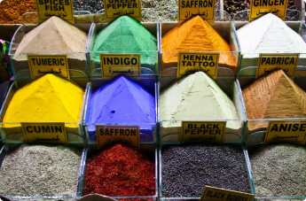
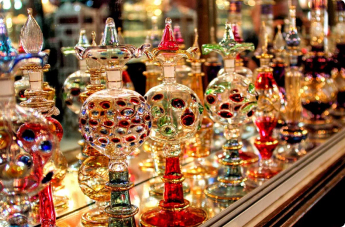
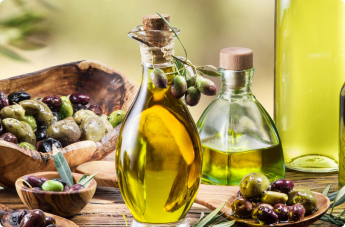
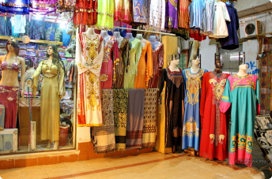
Women's dresses and men's shirts, jeans, T–shirts, various children's clothing – in Egypt all these items of clothing are made of high-quality local cotton and sold at quite attractive and affordable prices.
It’s also worth having a look at things made of camel hair, and not only clothes but pillows, blankets and carpets. The cost of such goods is considerable and you can find some things the quality of which will go beyond your expectations.
Thalassotherapy is a very effective and pleasant treatment with the use of seawater. The Red Sea water is rich in calcium, iodine, potassium, magnesium and mineral salts, and this composition is perfect for getting slimmer and younger, gaining immunity to various diseases and strengthening the body.
In addition to seawater, the Egyptians use algae which contain a variety of amino acids, as well as marine mud, sand and other products of the sea.
In most of the Egyptian hotels there are SPA centres which provide a wide range of services, such as sauna, scrubs and wraps. Also many travellers agree that the best SPA treatment in Egypt is aromatherapy massage. Oils used for it are of exceptional quality, so an unforgettable experience is guaranteed.
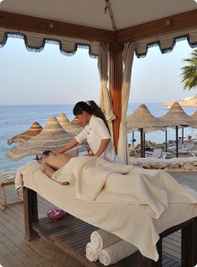
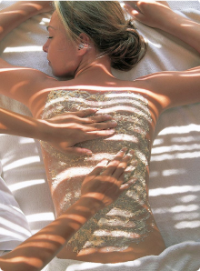
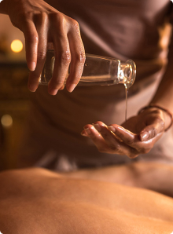